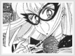

Entity » The Girl» Past Memories
Aino Minako, dubbed as "Mina Aino" in the U.S. televised version, is a friendly, energetic, and fun loving character. Technically, she is the first senshi to be discovered. Before she met Usagi and the other girls, she did have a past as another crime fighter...known as Sailor V...
In Tokyo, Sailor V is Usagi's idol. Usagi is an avid fan of Sailor V and proves it through her favorite arcade games and collection of Sailor V merchandise. She greatly admired Sailor V and wanted to be like her even before she became Sailor Moon herself. However brilliant Sailor V seemed, underneath that sweet smile and innocent face, Minako concealed a sad past. Back in England, she fought crimes as Sailor V with two friends, Alan and Katrina. Minako fell deeply in love with Alan, but never revealed her affections to him. One day, the three were caught in an explosion while on a mission, and Alan and Katrina, along with the rest of England, thought she didn't make it out. The truth was, she survived, but was just about to reveal herself when she saw the two kissing, obviously in love. Broken inside, she left England quietly without revealing to anyone that she was still alive. After she faked her death in England, she came to Tokyo, Japan to join the rest of the Sailor Senshi. In her debut as the fifth Sailor Senshi, Minako appears as Sailor V and saves Tuxedo Kamen and the other inner senshi from Zoicite and Kunzite with her cresent beam attack. Later she took off her mask and introduces herself as Sailor Venus. Thus, she and her guardian cat, Artemis, join the rest of the cast. Instead of going to Juuban High School with Usagi, Makoto and Ami, Minako attends Shibakouen Junior High School during the first four seasons of the anime series. However in the last season, Sailor Stars, Minako attends Juuban High with the other three, while Rei continues to attend T*A Private Academy. |